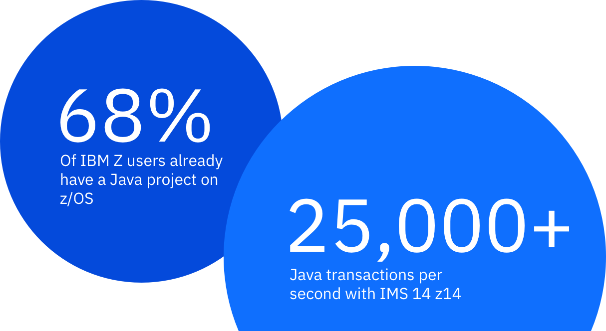

*

Java & IMS
With 14 million developers using Java to build apps, there’s no learning curve for leveraging the mainframe. Write your code once, and deploy anywhere, including in IMS on IBM Z.

{ Java can save you time, money, and headaches }
Cost
Java processing can be
offloaded to specialty engines,
which means you just saved
some money.
Application Agility
Choosing Java means you
have access to millions of skilled developers, which
means you just saved
yourself some headaches.
Co-Location
Running Java on Z, where
your data resides, just saved
you some time.
{ Don’t just take our word for it }

Java, COBOL, and IMS on Z SystemsBy Java-enabling existing IMS core banking functions, Fiducia & GAD is accelerating the creation of new services while extending the life and value of its applications.
Read MoreNorth American Bank
IMS and Java on IBM Z
A large North American bank was able to improve application maintenance and lower costs by converting applications to Java and run inside IMS for best performance.

IMS, SQL, and Open Data Access
Implementing IMS ODBM and IMS Catalog allowed Travelers to leverage Java and SQL skills to access IMS and other data in a single view.